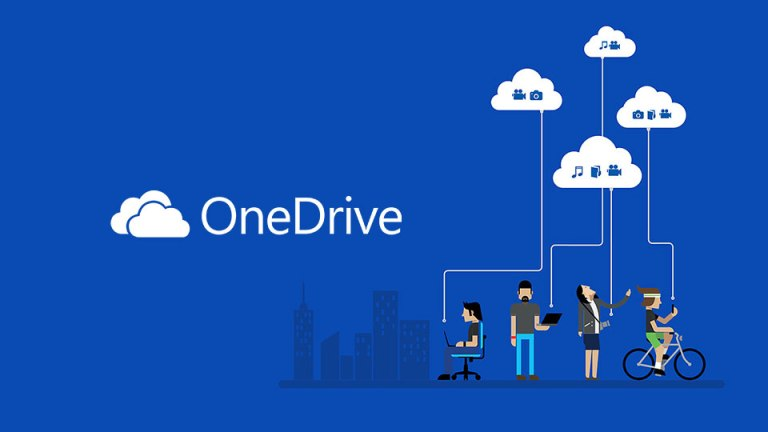

اسم الطالبة: نورا جمال عبد اللطيف محمد يوسف
الرقم الجامعي: 2500451
في السنوات الأخيرة أصبح الإنترنت جزء أساسي من حياتنا اليومية، وأصبح الاعتماد عليه في الدراسة والعمل والتواصل أمر طبيعى ومع زيادة حجم الملفات والبيانات التي نتعامل معها يوميًا ظهرت الحاجة إلى وسائل أكثر مرونة لحفظ الملفات والوصول إليها من أي مكان ، ومن هنا ظهرت المنصات السحابية التي وفرت للمستخدمين إمكانية تخزين ملفاتهم على الإنترنت بدلاً من حفظها على أجهزة الكمبيوتر أو الهواتف فقط.
أصبحت المنصات السحابية من الأدوات المهمة التي يعتمد عليها كثير من المستخدمين في الدراسة والعمل لأنها ساعدت على تسهيل إدارة الملفات ومشاركتها بين الأفراد والمؤسسات، كما أنها توفر للمستخدم إمكانية الوصول إلى ملفاته من أي جهاز متصل بالإنترنت دون الحاجة إلى حمل وحدات تخزين خارجية مثل الأقراص المحمولة. ومن أشهر هذه المنصات OneDrive , GoogleDrive ، والكثير من الأشخاص حول العالم يستخدمونها في الدراسة والعمل وحفظ البيانات المهمة.
يهدف هذا التقرير إلى توضيح مفهوم المنصات السحابية وكيفية عملها وأهم مميزاتها واستخداماتها بالإضافة إلى التعرف على أبرز الخدمات التي تقدمها للمستخدمين.
المنصات السحابية هي خدمات إلكترونية تسمح للمستخدم بتخزين الملفات والبيانات على خوادم متصلة بالإنترنت بدلاً من تخزينها على الجهاز الشخصي فقط، وبمجرد تسجيل الدخول إلى الحساب الخاص بالمستخدم يستطيع الوصول إلى ملفاته من أي مكان وفي أي وقت.
بمعنى أبسط المنصة السحابية تعمل كمساحة تخزين إلكترونية موجودة على الإنترنت يحتفظ فيها بالصور والمستندات والفيديوهات والملفات المختلفة وتستطيع الرجوع إليها عند الحاجة.

تعمل المنصات السحابية بطريقة سهلة وبسيطة، فعندما يقوم المستخدم برفع ملف إلى إحدى الخدمات السحابية يتم إرسال هذا الملف عبر الإنترنت إلى خوادم الشركة المقدمة للخدمة ليتم تخزينه بشكل آمن ، وبعد ذلك يمكن فتح الملف أو تنزيله أو التعديل عليه من أي جهاز آخر عند تسجيل الدخول بنفس الحساب ، على سبيل المثال: إذا قام طالب بحفظ مشروع دراسي على Google Driveمن جهازه الشخصي سيتمكن من فتح المشروع نفسه من هاتفه أو من جهاز في الجامعة دون الحاجة إلى نقل الملف يدويًا ، كما أن أي تعديل يتم إجراؤه على الملف يتم حفظه وتحديثه بشكل تلقائي.
Google Drive
يعتبر Google Drive من أشهر خدمات التخزين السحابي وأكثرها استخدامًا ، تقدم هذه الخدمة مساحة تخزين مجانية للمستخدمين كما تسمح بحفظ الملفات وتنظيمها ومشاركتها بسهولة ، بالإضافة إلى أنها تدعم خدمة العمل الجماعي على المستندات والعروض التقديمية وجداول البيانات في الوقت نفسه ، ومن مميزاته أنه منتشر بين الطلاب لسهولة استخدامه وتكامله مع خدمات اخري مثل Gmail و Google Docs.
على سبيل المثال، أستخدم Google Drive لحفظ ملفات المادة الدراسية ومشاركتها مع زميلاتي عند تنفيذ التكليفات المشتركة، مما يسهل متابعة التعديلات وتبادل الملفات بسرعة.
OneDrive
تقدم شركة مايكروسوفت خدمة OneDrive كمنصة للتخزين السحابي ومشاركة الملفات ، وتتميز بسهولة التكامل مع برامج Microsoft Office مثل Word و Excel و PowerPoint،ويستخدم بشكل واسع في المؤسسات التعليمية والشركات لأنه يتيح التعاون على الملفات والتحكم في صلاحيات الوصول إليها.
| الخدمة | الشركة | أهم المميزات |
|---|---|---|
| Google Drive | سهولة الاستخدام والتكامل مع Gmail و Google Docs | |
| OneDrive | Microsoft | التكامل مع برامج Microsoft Office والتعاون على الملفات |
من أهم الوظائف التي توفرها المنصات السحابية إمكانية مشاركة الملفات مع الآخرين بسهولة لأن المستخدم في الماضي كان يضطر إلى إرسال الملفات عبر البريد الإلكتروني أو نقلها باستخدام وسائل تخزين مختلفة ، أما الآن يمكن إنشاء رابط ومشاركته مع الأشخاص المطلوبين في ثوانٍ معدودة.
وتفيد مشاركة الملفات بشكل كبير في المشروعات الجماعية لأن أكثر من شخص يستطيع العمل على الملف نفسه ومشاهدة التعديلات بشكل مباشر مما يساعد على توفير الوقت والجهد وزيادة الإنتاجية.
زاد استخدام المنصات السحابية بشكل كبير في المؤسسات التعليمية خلال السنوات الأخيرة ، فأصبح الطلاب يستخدمونها لحفظ المحاضرات والواجبات والملفات الدراسية ، كما يعتمد المعلمون عليها في مشاركة المقررات والأنشطة التعليمية.
وتساعد هذه المنصات على تسهيل التعلم لأنها تسهل للطلاب الوصول إلى المحتوى التعليمي من المنزل ومتابعة الأنشطة الدراسية دون الحاجة إلى التواجد في مكان واحد.
على الرغم من المزايا الكثيرة للمنصات السحابية إلا أن هناك بعض التحديات التي قد تواجه المستخدمين، وأول هذه التحديات هو الحاجة إلى اتصال بالإنترنت للوصول إلى الملفات أو تحديثها بشكل مستمر.
كما أن بعض الخدمات تمنح المستخدم مساحة مجانية محدودة وقد يضطر إلى الاشتراك في خطط مدفوعة إذا احتاج إلى مساحة أكبر.
ومن الجوانب المهمة أيضًا ضرورة الاهتمام بأمان الحسابات واستخدام كلمات مرور قوية، لأن الملفات المخزنة قد تحتوي على معلومات شخصية أو دراسية مهمة.
من خلال استخدامي الشخصي لخدمة Google Drive في الدراسة ساعدتني على الاحتفاظ بالمحاضرات والواجبات في مكان واحد دون الخوف من فقدانها، كما أن إمكانية الوصول إلى الملفات من الهاتف أو الكمبيوتر وفرت لي الكثير من الوقت، خاصة عند العمل على مشاريع جماعية مع زميلاتي، لذلك أرى أن المنصات السحابية أصبحت أداة أساسية في حياة الطالب الجامعي.
في ختام هذا التقرير باختصار، فإن المنصات السحابية ومشاركة الملفات أصبحت جزءًا مهمًا من حياتنا اليومية لأنها قدمت حلولاً عملية لتخزين البيانات والوصول إليها من أي مكان ، كما ساعدت في تسهيل التعاون بين الأفراد وتبادل الملفات بسرعة وكفاءة.
وعلى الرغم من وجود بعض التحديات المتعلقة بالاتصال بالإنترنت وأمن المعلومات ، فإن فوائد هذه المنصات تجعلها من أكثر التقنيات استخدامًا في الوقت الحالي ومن المتوقع أن يزداد الاعتماد عليها مستقبلًا.